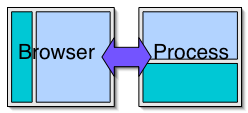
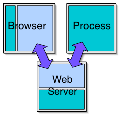

Overview
This document details how Selenium can be deployed to test or script web applications.Modes of Operation
Broadly speaking there are two modes of operation for Selenium TestRunner and DrivenTestRunner

The TestRunner mode of operation for Selenium is where its HTML & Javascript and the test suite are deployed alongside the Application Under Test (AUT) on a arbitrary web server. The test suite is coded as tables in a HTML page for each test.
See test runner documentation for more information.
Driven
Driven Selenium is where the browser is under the the control of a process on the same machine. That process is either a Java, .Net, Ruby or Python application and it is typically run in conjunction with a unit testing framework like JUnit or NUnit. Also possible, is a console application driving a browser interactively.
The test script is one that would be recognisable to people adept with unit test frameworks :
public void testOKClick() {
selenium.verifyTitle("First Page");
selenium.open("/TestPage.html");
selenium.click("OKButton");
selenium.verifyTitle("Another Page");
}
The difference from normal unit testing is that as part of the startup, three major things have to happen:
- The test framework needs to publish a fresh copy of the AUT. Selenium prefers to mount its own web server temporarily for the purposes of testing.
- The test framework needs to publish the static Selenium's HTML pages and Javascript in an apparent directory on the same web server as (1).
- The test framework needs to open a browser instance and point it to Selenium.html served in (2) above.
Some variations in the accesibility of the the webserver in question for testing purposes or its scriptablity mean a more complex setup is required:

See the driven documentation for more information.